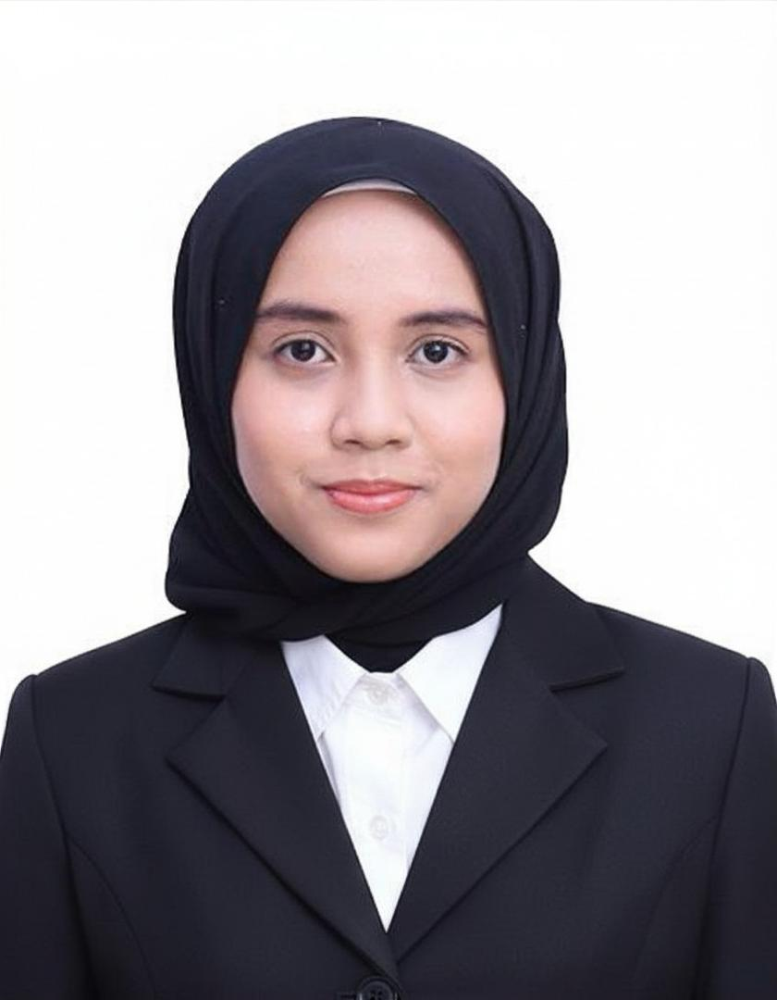
I am Nur Sofia Balqis Binti Rospi, a computer science diploma graduate from Kolej Profesional MARA Indera Mahkota, Pahang, with a CGPA of 3.80. I am experienced in web development, test automation, and database management, and I am deeply passionate about applying technology to create meaningful change in communities.
During my internship at IDS Medical Systems, I gained hands-on experience in software quality assurance, executing automation tests on real medical systems. Beyond academics, I actively contribute as a volunteer tutor, college secretariat, and community programme participant, reflecting my commitment to leadership, teamwork, and social responsibility.
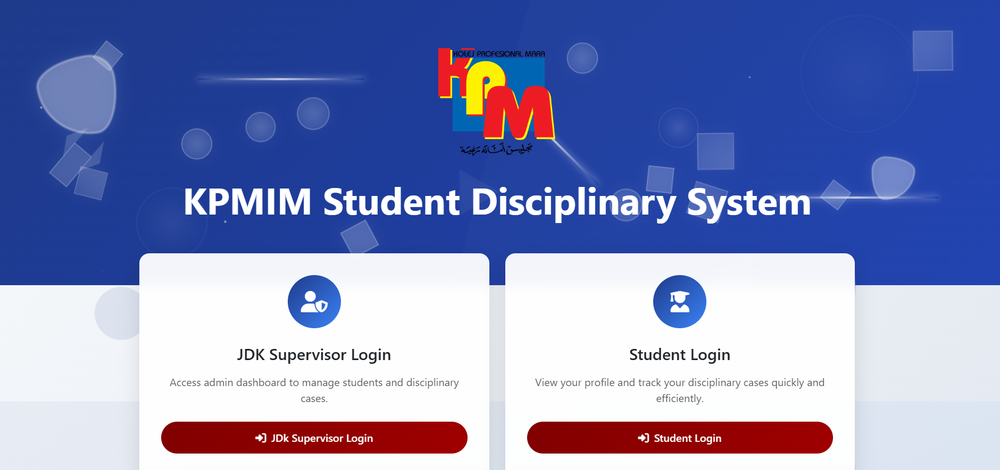
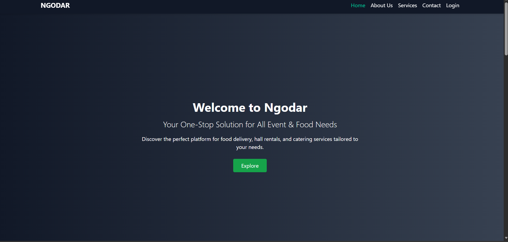
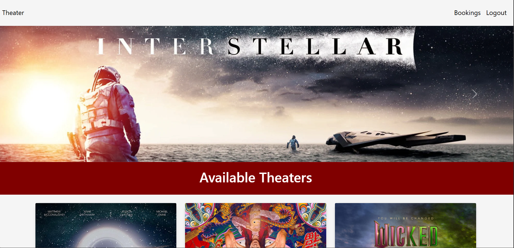
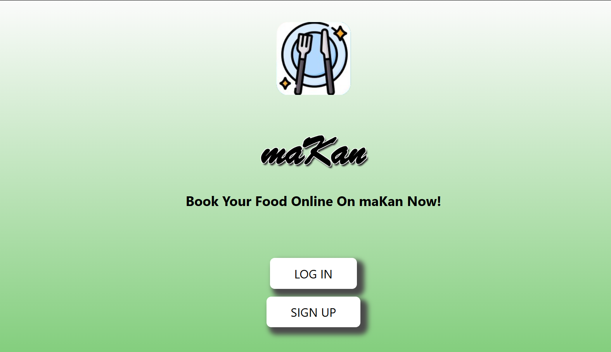
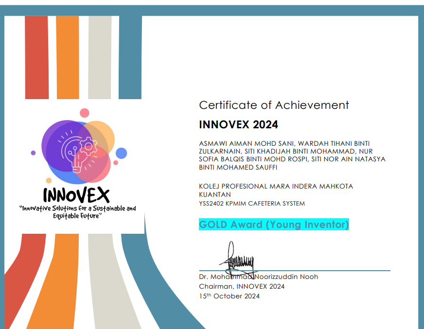
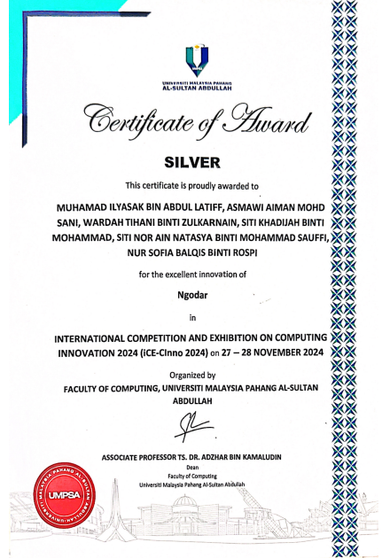
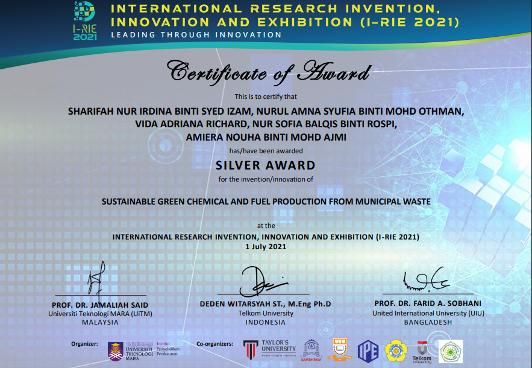
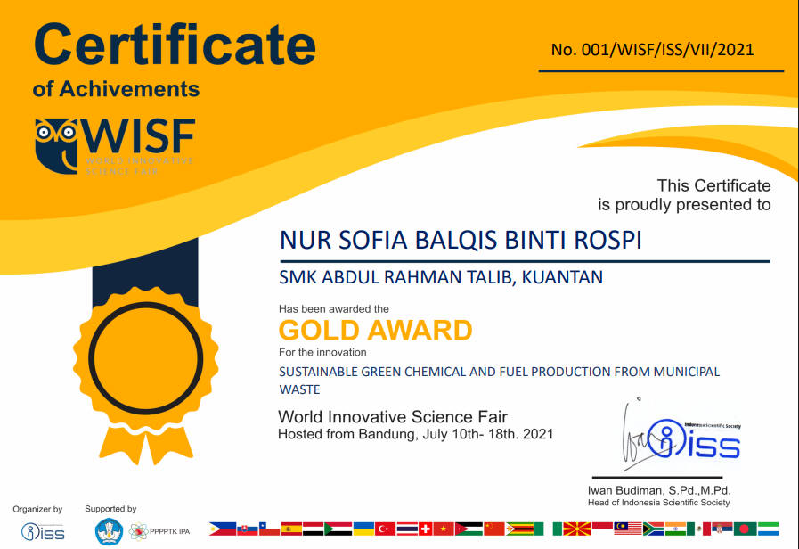
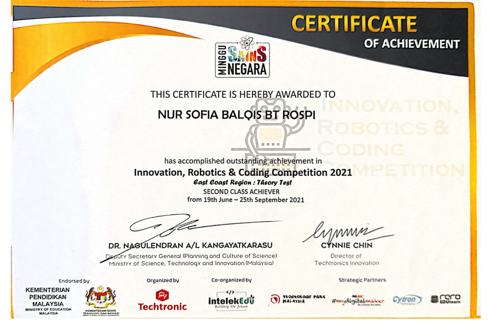
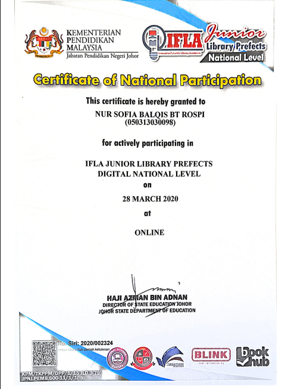
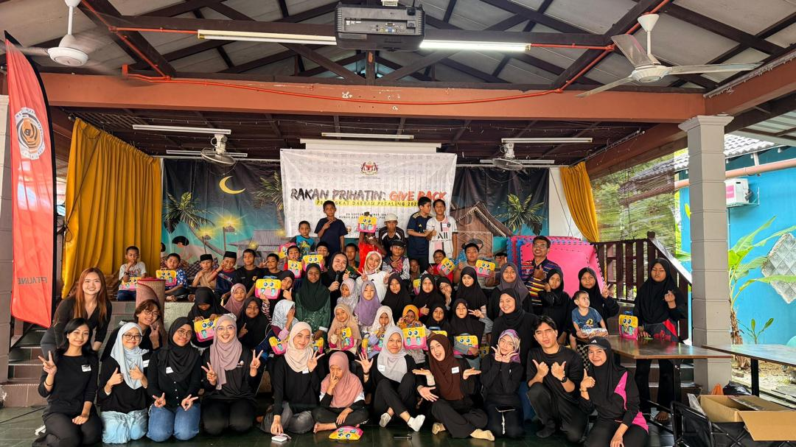
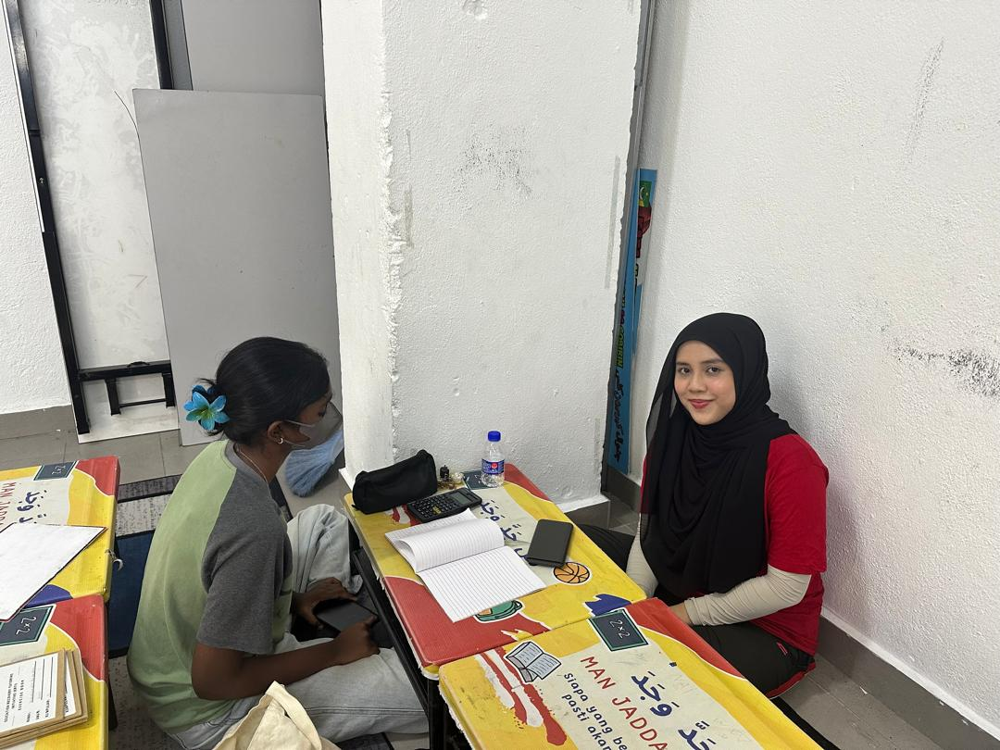
Open to scholarship opportunities, research collaborations, and impactful projects aligned with technology and community empowerment.